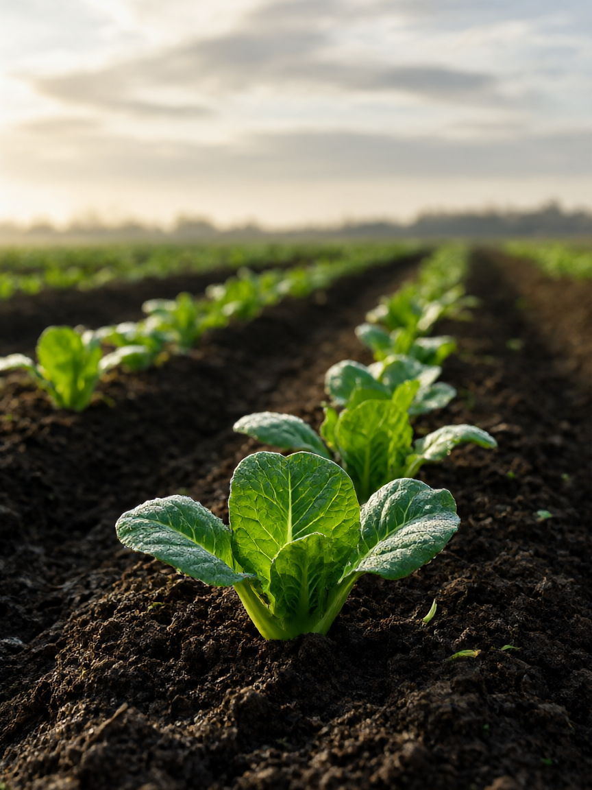

TODAY IN THE GARDEN
今天的菜园
播种至今—
最新归档天气—
GROWTH JOURNAL
成长记录
从第零天开始，慢慢长大。
WEATHER ARCHIVE
天气档案
阜阳 · 每日归档
加载中…
天气数据来源：Open-Meteo，历史数据可能延迟。低温环境下生长周期仅供参考。
GARDEN JOURNAL / 2026
从一粒种子开始，记录天气，也记录每一天的变化。

TODAY IN THE GARDEN
GROWTH JOURNAL
从第零天开始，慢慢长大。
WEATHER ARCHIVE
阜阳 · 每日归档
天气数据来源：Open-Meteo，历史数据可能延迟。低温环境下生长周期仅供参考。